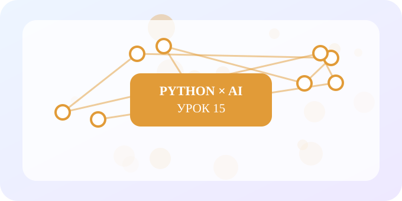

ІНТЕРАКТИВНА ЛАБОРАТОРІЯ · 9–11 КЛАС
Як покращити програму, не переписуючи її
Спростіть повторюваний код, зберігши результати.

1. Розбираємося в темі
Рефакторинг змінює структуру програми, але не її зовнішню поведінку. Перед змінами запишіть контрольні тести.
🔎 Питання для самоперевірки
Які дані потрібні? Який результат очікуємо? Як довести, що рішення працює? Чим може допомогти ШІ, а що Ви маєте перевірити самостійно?
2. Інтерактивна розминка
Оберіть підхід, який дозволяє навчатися усвідомлено.
3. Візуальний конструктор
Побудуйте послідовність дослідження. Можна перетягувати картки або натискати на них зі смартфона.
4. Симулятор: досліджуємо вплив параметра
Проведіть серію експериментів і порівняйте результати. Це навчальна модель, а не запуск бібліотеки Python.
0%
Натисніть кнопку для першого досліду.
5. Python-практика: розберіть і змініть код
Перш ніж запускати, передбачте результат. Потім змініть приклад відповідно до теми уроку.
values = [2, 4, 6, 8]
print(sum(values) / len(values))Відкрити Google Colab для запуску Python ↗
Запишіть, що саме Ви змінили, які тести провели й чому довіряєте результату.
🧪 Додаткова лабораторія: Цикли та повторення
Завдання уроку 15: Змініть кількість повторень і передбачте останній рядок.
📖 Коротка підказка до експерименту
Спочатку сформулюйте прогноз. Змініть одну умову, запустіть програму, порівняйте результат із прогнозом і поясніть його своїми словами. ШІ можна просити про пояснення помилки, але висновок сформулюйте самостійно.
Повний Python запускається у браузері через Pyodide за наявності інтернету. Код не надсилається на сервер курсу.
Тут з'явиться результат виконання.
🔍 Дослідницький вибір
Яка дія допоможе довести правильність програми?
🧩 Конструктор перевірки
Розставте етапи дослідження в правильному порядку кнопками ↑ ↓.
- Запустити змінений код
- Сформулювати висновок
- Передбачити результат
- Змінити одну умову
📋 Журнал дослідника
Ваші записи автоматично зберігаються у цьому браузері.
6. Мініпроєкт
Ваша місія: Спростіть повторюваний код, зберігши результати.
Критерії: пояснена мета, власний алгоритм або схема, щонайменше два тести, висновок про роль ШІ.
7. Перевірені онлайн-ресурси
Матеріали англійською або українською; російськомовні джерела не використовуються.
Ваш результат
Виконано дій: 0
У вікні друку оберіть «Зберегти як PDF». Звіт формується локально, без передавання даних.